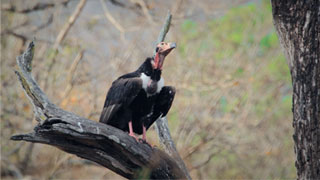
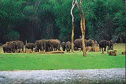
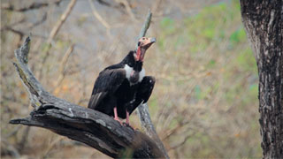
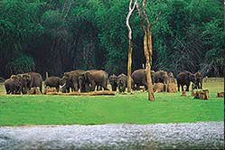
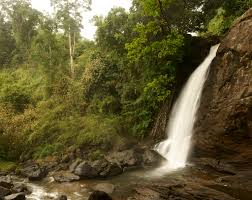
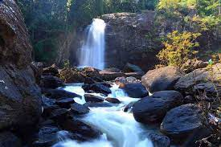
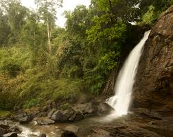
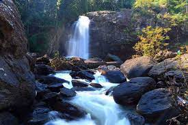

Muthanga Wildlife Sanctuary
This area is renowned with having world's largest recorded population of Asian Elephants and Tigers. Both of these species, along with the Vulture, are considered the flagship species of the Sanctuary. To this, we add Leopards, Jungle Cats, Leopard cats, spotted deer, Sambar deer, Gaur, Sloth bear, Wild dog, Wild boar, Indian pangolin, Stripe-necked mongoose and plethora of other mammals. Its location plays a huge role in its importance to the local ecology, as it shares its borders with the other protected areas of Bandipur and Nagarhole Tiger Reserve in North-East side and Mudumalai Tiger Reserve of Tamil Nadu in the south-eastern side. These offer a natural corridor for the seasonal migration of animals.
 



 


